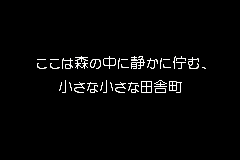

Daisuki Teddy (Japan)
Stateless / Passcode 🎮 4P Link
Cartridge Identity
- Game Code
ATDJ(FamilyATD)- Header Title
TEDDY- Maker / Revision
BL/ rev0- ROM Size
- 8.0 MiB (8,388,608 B)
- Save Media
None / Unknown- SHA-256
132f03c41ad7d142bfc0ad10109945c37df33f50aed5c8c467965c5553fdda89- Engine / SDK Group
comm-002(145 families)
Screenshots

Link Cable & Multiplayer Communications
This title contains detected communication capabilities: 🎮 4P Link.
Detailed protocol specifications, SIO registers, Joybus commands, and MultiBoot sequences are documented in the Link & Multiplayer Reference.
- Multi-Player SIO (4P)
- 16-bit ring network · SIOCNT (
0x04000128) literals:0x002e40,0x002ed8,0x002f04· SIODATA32/SIOMULTI0 (0x04000120) literals:0x003264
Cartridge Storage Architecture: Stateless / Passcode
Zero non-volatile battery hardware: This cartridge PCB contains ROM only (no SRAM, Flash, or EEPROM chips). Progression is preserved via on-screen passcodes or session-only gameplay. No
.sav file is generated or required.
ROM Assets, Compression & Audio
- BIOS Compression
- LZ77 (
0x10): 0 streams · RLE (0x30): 0 streams - ROM Pointer Tables
- 21 tables (0 pointing to validated compressed streams)
- SDK Backup Tags
SRAM_F_V102
Asset Map (formatkit.asset-map.v1)
Download ATDJ-r0-132f03c41ad7d142.asset-map.json.gz (97,823 B (95.5 KiB)) Verified PASS · 12.37% coverage
| Metric | Bytes / Value | Entries |
|---|---|---|
| Identified | 499,620 B (487.9 KiB) (5.96%) | 1,139 |
| Mapped | 0 B (0.00%) | 0 |
| Opaque | 538,080 B (525.5 KiB) (6.41%) | 1 |
| Unknown | 7,350,908 B (7.01 MiB) (87.63%) | 722 |
| Total ROM Size | 8,388,608 B (8.00 MiB) | 1,862 |
| Coverage % | 12.37% | — |
| Entries w/ Code Refs | 1,156 / 1,862 (62.08%) | — |
Top Identified Formats: compress.bios-huffman (360 · 256,836 B (250.8 KiB)) · gfx.gba-palette (777 · 241,824 B (236.2 KiB)) · audio.m4a-song-table (1 · 768 B) · gba.rom-header (1 · 192 B)
Largest unknown Extents (Headerless / Custom Asset Candidates)
| Offset | Size | Shannon Entropy | Code Refs |
|---|---|---|---|
0x00397434 | 431,312 B (421.2 KiB) | 3.477 bits/B | 0 |
0x0046D264 | 339,400 B (331.4 KiB) | 1.449 bits/B | 0 |
0x00082D94 | 316,524 B (309.1 KiB) | 5.171 bits/B | 0 |
0x00322F28 | 294,924 B (288.0 KiB) | 6.241 bits/B | 0 |
0x000D0220 | 217,900 B (212.8 KiB) | 5.434 bits/B | 0 |
gzip -dk ATDJ-r0-132f03c41ad7d142.asset-map.json.gz && gbakit map verify rom.gba ATDJ-r0-132f03c41ad7d142.asset-map.json
gbakit assets export rom.gba --asset-map ATDJ-r0-132f03c41ad7d142.asset-map.json -o out/Text, Fonts & Scene Data
- Primary Text Encoding
- 16-bit / UTF-16LE text (
9ASCII strings ·1Shift-JIS runs) - Font & VWF Indicators
- VWF Width Table 1bpp Font · BIOS SWIs: BitUnPack
0x10:13· LZ770x11/12:10· Huffman0x13:4· RLE0x14/15:10 - Scene & Packaging
18ROM pointer tables (≥32 entries,3≥200) ·10relativeu32TOCs ·353OAM metasprite hits
Password System
- Save Media
- Battery-Backed (SRAM)
- Password Class
- Candidate Static Password Table (
candidate_static_table_no_ui) - Static Table(s)
0x2575b4·0x2cdcb8
Hardware MMIO Subsystems
ppu_display0x8004160